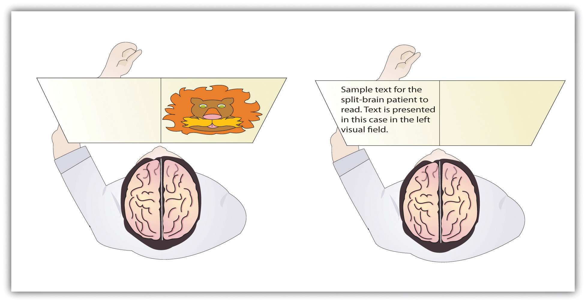

If you were someone who understood brain anatomy and were to look at the brain of an animal that you had never seen before, you would nevertheless be able to deduce the likely capacities of the animal. This is because the brains of all animals are very similar in overall form. In each animal the brain is layered, and the basic structures of the brain are similar (see Figure 3.6 "The Major Structures in the Human Brain"). The innermost structures of the brain—the parts nearest the spinal cord—are the oldest part of the brain, and these areas carry out the same the functions they did for our distant ancestors. The “old brain” regulates basic survival functions, such as breathing, moving, resting, and feeding, and creates our experiences of emotion. Mammals, including humans, have developed further brain layers that provide more advanced functions—for instance, better memory, more sophisticated social interactions, and the ability to experience emotions. Humans have a very large and highly developed outer layer known as the cerebral cortex (see Figure 3.7 "Cerebral Cortex"), which makes us particularly adept at these processes.
Figure 3.6 The Major Structures in the Human Brain

The major brain parts are colored and labeled.
Source: Adapted from Camazine, S. (n.d.). Images of the brain. Medical, science, and nature things: Photography and digital imagery by Scott Camazine. Retrieved from http://www.scottcamazine.com/photos/brain/pages/09MRIBrain_jpg.htm.
Figure 3.7 Cerebral Cortex

Humans have a very large and highly developed outer brain layer known as the cerebral cortex. The cortex provides humans with excellent memory, outstanding cognitive skills, and the ability to experience complex emotions.
Source: Adapted from Wikia Education. (n.d.). Cerebral cortex. Retrieved from http://psychology.wikia.com/wiki/Cerebral_cortex.
The brain stemThe oldest and innermost region of the brain, it serves to control the most basic functions of life, including breathing, attention, and motor responses. is the oldest and innermost region of the brain. It’s designed to control the most basic functions of life, including breathing, attention, and motor responses (Figure 3.8 "The Brain Stem and the Thalamus"). The brain stem begins where the spinal cord enters the skull and forms the medullaThe area of the brain stem that controls heart rate and breathing., the area of the brain stem that controls heart rate and breathing. In many cases the medulla alone is sufficient to maintain life—animals that have the remainder of their brains above the medulla severed are still able to eat, breathe, and even move. The spherical shape above the medulla is the ponsA structure in the brain stem that helps control the movements of the body, playing a particularly important role in balance and walking., a structure in the brain stem that helps control the movements of the body, playing a particularly important role in balance and walking.
Running through the medulla and the pons is a long, narrow network of neurons known as the reticular formationA long, narrow network of neurons that runs through the medulla and the pons.. The job of the reticular formation is to filter out some of the stimuli that are coming into the brain from the spinal cord and to relay the remainder of the signals to other areas of the brain. The reticular formation also plays important roles in walking, eating, sexual activity, and sleeping. When electrical stimulation is applied to the reticular formation of an animal, it immediately becomes fully awake, and when the reticular formation is severed from the higher brain regions, the animal falls into a deep coma.
Figure 3.8 The Brain Stem and the Thalamus

The brain stem is an extension of the spinal cord, including the medulla, the pons, the thalamus, and the reticular formation.
Above the brain stem are other parts of the old brain that also are involved in the processing of behavior and emotions (see Figure 3.9 "The Limbic System"). The thalamusThe egg-shaped structure above the brain stem that filters sensory information coming up from the spinal cord and relays signals to the higher brain levels. is the egg-shaped structure above the brain stem that applies still more filtering to the sensory information that is coming up from the spinal cord and through the reticular formation, and it relays some of these remaining signals to the higher brain levels (Guillery & Sherman, 2002).Sherman, S. M., & Guillery, R. W. (2006). Exploring the thalamus and its role in cortical function (2nd ed.). Cambridge, MA: MIT Press. The thalamus also receives some of the higher brain’s replies, forwarding them to the medulla and the cerebellum. The thalamus is also important in sleep because it shuts off incoming signals from the senses, allowing us to rest.
Figure 3.9 The Limbic System

This diagram shows the major parts of the limbic system, as well as the pituitary gland, which is controlled by it.
The cerebellumTwo wrinkled ovals located behind the brain stem that function to coordinate voluntary movement. (literally, “little brain”) consists of two wrinkled ovals behind the brain stem. It functions to coordinate voluntary movement. People who have damage to the cerebellum have difficulty walking, keeping their balance, and holding their hands steady. Consuming alcohol influences the cerebellum, which is why people who are drunk have more difficulty walking in a straight line. Also, the cerebellum contributes to emotional responses, helps us discriminate between different sounds and textures, and is important in learning (Bower & Parsons, 2003).Bower, J. M., & Parsons, J. M. (2003). Rethinking the lesser brain. Scientific American, 289, 50–57.
Whereas the primary function of the brain stem is to regulate the most basic aspects of life, including motor functions, the limbic system is largely responsible for memory and emotions, including our responses to reward and punishment. The limbic systemA brain area located between the brain stem and the two cerebral hemispheres that governs emotion and memory. is a brain area, located between the brain stem and the two cerebral hemispheres, that governs emotion and memory. It includes the amygdala, the hypothalamus, and the hippocampus.
The amygdalaA region of the old brain primarily responsible for regulating our perceptions of, and reactions to, aggression and fear. consists of two “almond-shaped” clusters (amygdala comes from the Latin word for “almond”) and is primarily responsible for regulating our perceptions of, and reactions to, aggression and fear. The amygdala has connections to other bodily systems related to fear, including the sympathetic nervous system (which we will see later is important in fear responses), facial responses (which perceive and express emotions), the processing of smells, and the release of neurotransmitters related to stress and aggression (Best, 2009).Best, B. (2009). The amygdala and the emotions. In Anatomy of the mind (chap. 9). Retrieved from Welcome to the World of Ben Best website: http://www.benbest.com/science/anatmind/anatmd9.html In one early study, Klüver and Bucy (1939)Klüver, H., & Bucy, P. C. (1939). Preliminary analysis of functions of the temporal lobes in monkeys. Archives of Neurology & Psychiatry (Chicago), 42, 979–1000. damaged the amygdala of an aggressive rhesus monkey. They found that the once angry animal immediately became passive and no longer responded to fearful situations with aggressive behavior. Electrical stimulation of the amygdala in other animals also influences aggression. In addition to helping us experience fear, the amygdala also helps us learn from situations that create fear. When we experience events that are dangerous, the amygdala stimulates the brain to remember the details of the situation so that we learn to avoid it in the future (Sigurdsson, Doyère, Cain, & LeDoux, 2007).Sigurdsson, T., Doyère, V., Cain, C. K., & LeDoux, J. E. (2007). Long-term potentiation in the amygdala: A cellular mechanism of fear learning and memory. Neuropharmacology, 52(1), 215–227.
Located just under the thalamus (hence its name) the hypothalamusA brain structure that performs a variety of functions, including the regulation of hunger and sexual behavior, as well as linking the nervous system to the endocrine system via the pituitary gland. is a brain structure that contains a number of small areas that perform a variety of functions, including the important role of linking the nervous system to the endocrine system via the pituitary gland. Through its many interactions with other parts of the brain, the hypothalamus helps regulate body temperature, hunger, thirst, and sex, and responds to the satisfaction of these needs by creating feelings of pleasure. Olds and Milner (1954)Olds, J., & Milner, P. (1954). Positive reinforcement produced by electrical stimulation of septal area and other regions of rat brain. Journal of Comparative and Physiological Psychology, 47, 419–427. discovered these reward centers accidentally after they had momentarily stimulated the hypothalamus of a rat. The researchers noticed that after being stimulated, the rat continued to move to the exact spot in its cage where the stimulation had occurred, as if it were trying to re-create the circumstances surrounding its original experience. Upon further research into these reward centers, Olds (1958)Olds, J. (1958). Self-stimulation of the brain: Its use to study local effects of hunger, sex, and drugs. Science, 127, 315–324. discovered that animals would do almost anything to re-create enjoyable stimulation, including crossing a painful electrified grid to receive it. In one experiment a rat was given the opportunity to electrically stimulate its own hypothalamus by pressing a pedal. The rat enjoyed the experience so much that it pressed the pedal more than 7,000 times per hour until it collapsed from sheer exhaustion.
The hippocampusA limbic system brain structure important in storing information in long-term memory. consists of two “horns” that curve back from the amygdala. The hippocampus is important in storing information in long-term memory. If the hippocampus is damaged, a person cannot build new memories, living instead in a strange world where everything he or she experiences just fades away, even while older memories from the time before the damage are untouched.
All animals have adapted to their environments by developing abilities that help them survive. Some animals have hard shells, others run extremely fast, and some have acute hearing. Human beings do not have any of these particular characteristics, but we do have one big advantage over other animals—we are very, very smart.
You might think that we should be able to determine the intelligence of an animal by looking at the ratio of the animal’s brain weight to the weight of its entire body. But this does not really work. The elephant’s brain is one thousandth of its weight, but the whale’s brain is only one ten-thousandth of its body weight. On the other hand, although the human brain is one 60th of its body weight, the mouse’s brain represents one fortieth of its body weight. Despite these comparisons, elephants do not seem 10 times smarter than whales, and humans definitely seem smarter than mice.
The key to the advanced intelligence of humans is not found in the size of our brains. What sets humans apart from other animals is our larger cerebral cortexThe outer bark-like layer of the brain that allows us to so successfully use language, acquire complex skills, create tools, and live in social groups.—the outer bark-like layer of our brain that allows us to so successfully use language, acquire complex skills, create tools, and live in social groups (Gibson, 2002).Gibson, K. R. (2002). Evolution of human intelligence: The roles of brain size and mental construction. Brain Behavior and Evolution 59, 10–20. In humans, the cerebral cortex is wrinkled and folded, rather than smooth as it is in most other animals. This creates a much greater surface area and size, and allows increased capacities for learning, remembering, and thinking. The folding of the cerebral cortex is referred to as corticalization.
Although the cortex is only about one tenth of an inch thick, it makes up more than 80% of the brain’s weight. The cortex contains about 20 billion nerve cells and 300 trillion synaptic connections (de Courten-Myers, 1999).de Courten-Myers, G. M. (1999). The human cerebral cortex: Gender differences in structure and function. Journal of Neuropathology and Experimental Neurology, 58, 217–226. Supporting all these neurons are billions more glial cells (glia)Cells that surround and link to the neurons, protecting them, providing them with nutrients, and absorbing unused neurotransmitters., cells that surround and link to the neurons, protecting them, providing them with nutrients, and absorbing unused neurotransmitters. The glia come in different forms and have different functions. For instance, the myelin sheath surrounding the axon of many neurons is a type of glial cell. The glia are essential partners of neurons, without which the neurons could not survive or function (Miller, 2005).Miller, G. (2005). Neuroscience: The dark side of glia. Science, 308(5723), 778–781.
The cerebral cortex is divided into two hemispheres, and each hemisphere is divided into four lobes, each separated by folds known as fissures. If we look at the cortex starting at the front of the brain and moving over the top (see Figure 3.10 "The Two Hemispheres"), we see first the frontal lobeOne of the four brain lobes, responsible primarily for thinking, planning, memory, and judgment. (behind the forehead), which is responsible primarily for thinking, planning, memory, and judgment. Following the frontal lobe is the parietal lobeOne of the four brain lobes, responsible primarily for processing information about touch., which extends from the middle to the back of the skull and which is responsible primarily for processing information about touch. Then comes the occipital lobeOne of the four brain lobes, responsible primarily for processing visual information., at the very back of the skull, which processes visual information. Finally, in front of the occipital lobe (pretty much between the ears) is the temporal lobeOne of the four brain lobes, responsible primarily for hearing and language., responsible primarily for hearing and language.
Figure 3.10 The Two Hemispheres

The brain is divided into two hemispheres (left and right), each of which has four lobes (temporal, frontal, occipital, and parietal). Furthermore, there are specific cortical areas that control different processes.
When the German physicists Gustav Fritsch and Eduard Hitzig (1870/2009)Fritsch, G., & Hitzig, E. (2009). Electric excitability of the cerebrum (Über die Elektrische erregbarkeit des Grosshirns). Epilepsy & Behavior, 15(2), 123–130. (Original work published 1870) applied mild electric stimulation to different parts of a dog’s cortex, they discovered that they could make different parts of the dog’s body move. Furthermore, they discovered an important and unexpected principle of brain activity. They found that stimulating the right side of the brain produced movement in the left side of the dog’s body, and vice versa. This finding follows from a general principle about how the brain is structured, called contralateral control. The brain is wired such that in most cases the left hemisphere receives sensations from and controls the right side of the body, and vice versa.
Fritsch and Hitzig also found that the movement that followed the brain stimulation only occurred when they stimulated a specific arch-shaped region that runs across the top of the brain from ear to ear, just at the front of the parietal lobe (see Figure 3.11 "The Sensory Cortex and the Motor Cortex"). Fritsch and Hitzig had discovered the motor cortexThe part of the cortex that controls and executes movements of the body by sending signals to the cerebellum and the spinal cord., the part of the cortex that controls and executes movements of the body by sending signals to the cerebellum and the spinal cord. More recent research has mapped the motor cortex even more fully, by providing mild electronic stimulation to different areas of the motor cortex in fully conscious patients while observing their bodily responses (because the brain has no sensory receptors, these patients feel no pain). As you can see in Figure 3.11 "The Sensory Cortex and the Motor Cortex", this research has revealed that the motor cortex is specialized for providing control over the body, in the sense that the parts of the body that require more precise and finer movements, such as the face and the hands, also are allotted the greatest amount of cortical space.
Figure 3.11 The Sensory Cortex and the Motor Cortex
The portion of the sensory and motor cortex devoted to receiving messages that control specific regions of the body is determined by the amount of fine movement that area is capable of performing. Thus the hand and fingers have as much area in the cerebral cortex as does the entire trunk of the body.
Just as the motor cortex sends out messages to the specific parts of the body, the somatosensory cortexAn area just behind and parallel to the motor cortex at the back of the frontal lobe that receives information from the skin’s sensory receptors and the movements of different body parts., an area just behind and parallel to the motor cortex at the back of the frontal lobe, receives information from the skin’s sensory receptors and the movements of different body parts. Again, the more sensitive the body region, the more area is dedicated to it in the sensory cortex. Our sensitive lips, for example, occupy a large area in the sensory cortex, as do our fingers and genitals.
Other areas of the cortex process other types of sensory information. The visual cortexThe area located in the occipital lobe that processes visual information. is the area located in the occipital lobe (at the very back of the brain) that processes visual information. If you were stimulated in the visual cortex, you would see flashes of light or color, and perhaps you remember having had the experience of “seeing stars” when you were hit in, or fell on, the back of your head. The temporal lobe, located on the lower side of each hemisphere, contains the auditory cortexThe area located in the temporal lobe that is responsible for hearing and language., which is responsible for hearing and language. The temporal lobe also processes some visual information, providing us with the ability to name the objects around us (Martin, 2007).Martin, A. (2007). The representation of object concepts in the brain. Annual Review of Psychology, 58, 25–45.
As you can see in Figure 3.11 "The Sensory Cortex and the Motor Cortex", the motor and sensory areas of the cortex account for a relatively small part of the total cortex. The remainder of the cortex is made up of association areasBrain regions in which sensory and motor information is combined and associated with stored knowledge. in which sensory and motor information is combined and associated with our stored knowledge. These association areas are the places in the brain that are responsible for most of the things that make human beings seem human. The association areas are involved in higher mental functions, such as learning, thinking, planning, judging, moral reflecting, figuring, and spatial reasoning.
The control of some specific bodily functions, such as movement, vision, and hearing, is performed in specified areas of the cortex, and if these areas are damaged, the individual will likely lose the ability to perform the corresponding function. For instance, if an infant suffers damage to facial recognition areas in the temporal lobe, it is likely that he or she will never be able to recognize faces (Farah, Rabinowitz, Quinn, & Liu, 2000).Farah, M. J., Rabinowitz, C., Quinn, G. E., & Liu, G. T. (2000). Early commitment of neural substrates for face recognition. Cognitive Neuropsychology, 17(1–3), 117–123. On the other hand, the brain is not divided up in an entirely rigid way. The brain’s neurons have a remarkable capacity to reorganize and extend themselves to carry out particular functions in response to the needs of the organism, and to repair damage. As a result, the brain constantly creates new neural communication routes and rewires existing ones. NeuroplasticityThe brain’s ability to change its structure and function in response to experience or damage. refers to the brain’s ability to change its structure and function in response to experience or damage. Neuroplasticity enables us to learn and remember new things and adjust to new experiences.
Our brains are the most “plastic” when we are young children, as it is during this time that we learn the most about our environment. On the other hand, neuroplasticity continues to be observed even in adults (Kolb & Fantie, 1989).Kolb, B., & Fantie, B. (1989). Development of the child’s brain and behavior. In C. R. Reynolds & E. Fletcher-Janzen (Eds.), Handbook of clinical child neuropsychology (pp. 17–39). New York, NY: Plenum Press. The principles of neuroplasticity help us understand how our brains develop to reflect our experiences. For instance, accomplished musicians have a larger auditory cortex compared with the general population (Bengtsson et al., 2005)Bengtsson, S. L., Nagy, Z., Skare, S., Forsman, L., Forssberg, H., & Ullén, F. (2005). Extensive piano practicing has regionally specific effects on white matter development. Nature Neuroscience, 8(9), 1148–1150. and also require less neural activity to move their fingers over the keys than do novices (Münte, Altenmüller, & Jäncke, 2002).Münte, T. F., Altenmüller, E., & Jäncke, L. (2002). The musician’s brain as a model of neuroplasticity. Nature Reviews Neuroscience, 3(6), 473–478. These observations reflect the changes in the brain that follow our experiences.
Plasticity is also observed when there is damage to the brain or to parts of the body that are represented in the motor and sensory cortexes. When a tumor in the left hemisphere of the brain impairs language, the right hemisphere will begin to compensate to help the person recover the ability to speak (Thiel et al., 2006).Thiel, A., Habedank, B., Herholz, K., Kessler, J., Winhuisen, L., Haupt, W. F., & Heiss, W. D. (2006). From the left to the right: How the brain compensates progressive loss of language function. Brain and Language, 98(1), 57–65. And if a person loses a finger, the area of the sensory cortex that previously received information from the missing finger will begin to receive input from adjacent fingers, causing the remaining digits to become more sensitive to touch (Fox, 1984).Fox, J. L. (1984). The brain’s dynamic way of keeping in touch. Science, 225(4664), 820–821.
Although neurons cannot repair or regenerate themselves as skin or blood vessels can, new evidence suggests that the brain can engage in neurogenesisThe forming of new neurons, the forming of new neurons (Van Praag, Zhao, Gage, & Gazzaniga, 2004).Van Praag, H., Zhao, X., Gage, F. H., & Gazzaniga, M. S. (2004). Neurogenesis in the adult mammalian brain. In The cognitive neurosciences (3rd ed., pp. 127–137). Cambridge, MA: MIT Press. These new neurons originate deep in the brain and may then migrate to other brain areas where they form new connections with other neurons (Gould, 2007).Gould, E. (2007). How widespread is adult neurogenesis in mammals? Nature Reviews Neuroscience 8, 481–488. doi:10.1038/nrn2147 This leaves open the possibility that someday scientists might be able to “rebuild” damaged brains by creating drugs that help grow neurons.
We have seen that the left hemisphere of the brain primarily senses and controls the motor movements on the right side of the body, and vice versa. This fact provides an interesting way to study brain lateralizationThe idea that the left and the right hemispheres of the brain are specialized to perform different functions.—the idea that the left and the right hemispheres of the brain are specialized to perform different functions. Gazzaniga, Bogen, and Sperry (1965)Gazzaniga, M. S., Bogen, J. E., & Sperry, R. W. (1965). Observations on visual perception after disconnexion of the cerebral hemispheres in man. Brain, 88(2), 221–236. studied a patient, known as W. J., who had undergone an operation to relieve severe seizures. In this surgery the region that normally connects the two halves of the brain and supports communication between the hemispheres, known as the corpus callosumThe region that connects the two halves of the brain and supports communication between the hemispheres., is severed. As a result, the patient essentially becomes a person with two separate brains. Because the left and right hemispheres are separated, each hemisphere develops a mind of its own, with its own sensations, concepts, and motivations (Gazzaniga, 2005).Gazzaniga, M. S. (2005). Forty-five years of split-brain research and still going strong. Nature Reviews Neuroscience, 6(8), 653–659.
In their research, Gazzaniga and his colleagues tested the ability of W. J. to recognize and respond to objects and written passages that were presented to only the left or to only the right brain hemispheres (see Figure 3.12 "Visual and Verbal Processing in the Split-Brain Patient"). The researchers had W. J. look straight ahead and then flashed, for a fraction of a second, a picture of a geometrical shape to the left of where he was looking. By doing so, they assured that—because the two hemispheres had been separated—the image of the shape was experienced only in the right brain hemisphere (remember that sensory input from the left side of the body is sent to the right side of the brain). Gazzaniga and his colleagues found that W. J. was able to identify what he had been shown when he was asked to pick the object from a series of shapes, using his left hand, but that he could not do this when the object was shown in the right visual field. On the other hand, W. J. could easily read written material presented in the right visual field (and thus experienced in the left hemisphere) but not when it was presented in the left visual field.
Figure 3.12 Visual and Verbal Processing in the Split-Brain Patient
The information that is presented on the left side of our field of vision is transmitted to the right brain hemisphere, and vice versa. In split-brain patients, the severed corpus callosum does not permit information to be transferred between hemispheres, which allows researchers to learn about the functions of each hemisphere. In the sample on the left, the split-brain patient could not choose which image had been presented because the left hemisphere cannot process visual information. In the sample on the right the patient could not read the passage because the right brain hemisphere cannot process language.
This research, and many other studies following it, has demonstrated that the two brain hemispheres specialize in different abilities. In most people the ability to speak, write, and understand language is located in the left hemisphere. This is why W. J. could read passages that were presented on the right side and thus transmitted to the left hemisphere, but could not read passages that were only experienced in the right brain hemisphere. The left hemisphere is also better at math and at judging time and rhythm. It is also superior in coordinating the order of complex movements—for example, lip movements needed for speech. The right hemisphere, on the other hand, has only very limited verbal abilities, and yet it excels in perceptual skills. The right hemisphere is able to recognize objects, including faces, patterns, and melodies, and it can put a puzzle together or draw a picture. This is why W. J. could pick out the image when he saw it on the left, but not the right, visual field.
Although Gazzaniga’s research demonstrated that the brain is in fact lateralized, such that the two hemispheres specialize in different activities, this does not mean that when people behave in a certain way or perform a certain activity they are only using one hemisphere of their brains at a time. That would be drastically oversimplifying the concept of brain differences. We normally use both hemispheres at the same time, and the difference between the abilities of the two hemispheres is not absolute (Soroker et al., 2005).Soroker, N., Kasher, A., Giora, R., Batori, G., Corn, C., Gil, M., & Zaidel, E. (2005). Processing of basic speech acts following localized brain damage: A new light on the neuroanatomy of language. Brain and Cognition, 57(2), 214–217.
Across cultures and ethnic groups, about 90% of people are mainly right-handed, whereas only 10% are primarily left-handed (Peters, Reimers, & Manning, 2006).Peters, M., Reimers, S., & Manning, J. T. (2006). Hand preference for writing and associations with selected demographic and behavioral variables in 255,100 subjects: The BBC Internet study. Brain and Cognition, 62(2), 177–189. This fact is puzzling, in part because the number of left-handers is so low, and in part because other animals, including our closest primate relatives, do not show any type of handedness. The existence of right-handers and left-handers provides an interesting example of the relationship among evolution, biology, and social factors and how the same phenomenon can be understood at different levels of analysis (Harris, 1990; McManus, 2002).Harris, L. J. (1990). Cultural influences on handedness: Historical and contemporary theory and evidence. In S. Coren (Ed.), Left-handedness: Behavioral implications and anomalies. New York, NY: Elsevier; McManus, I. C. (2002). Right hand, left hand: The origins of asymmetry in brains, bodies, atoms, and cultures. Cambridge, MA: Harvard University Press.
At least some handedness is determined by genetics. Ultrasound scans show that 9 out of 10 fetuses suck the thumb of their right hand, suggesting that the preference is determined before birth (Hepper, Wells, & Lynch, 2005),Hepper, P. G., Wells, D. L., & Lynch, C. (2005). Prenatal thumb sucking is related to postnatal handedness. Neuropsychologia, 43, 313–315.and the mechanism of transmission has been linked to a gene on the X chromosome (Jones & Martin, 2000).Jones, G. V., & Martin, M. (2000). A note on Corballis (1997) and the genetics and evolution of handedness: Developing a unified distributional model from the sex-chromosomes gene hypothesis. Psychological Review, 107(1), 213–218. It has also been observed that left-handed people are likely to have fewer children, and this may be in part because the mothers of left-handers are more prone to miscarriages and other prenatal problems (McKeever, Cerone, Suter, & Wu, 2000).McKeever, W. F., Cerone, L. J., Suter, P. J., & Wu, S. M. (2000). Family size, miscarriage-proneness, and handedness: Tests of hypotheses of the developmental instability theory of handedness. Laterality: Asymmetries of Body, Brain, and Cognition, 5(2), 111–120.
But culture also plays a role. In the past, left-handed children were forced to write with their right hands in many countries, and this practice continues, particularly in collectivistic cultures, such as India and Japan, where left-handedness is viewed negatively as compared with individualistic societies, such as the United States. For example, India has about half as many left-handers as the United States (Ida & Mandal, 2003).Ida, Y., & Mandal, M. K. (2003). Cultural differences in side bias: Evidence from Japan and India. Laterality: Asymmetries of Body, Brain, and Cognition, 8(2), 121–133.
There are both advantages and disadvantages to being left-handed in a world where most people are right-handed. One problem for lefties is that the world is designed for right-handers. Automatic teller machines (ATMs), classroom desks, scissors, microscopes, drill presses, and table saws are just some examples of everyday machinery that is designed with the most important controls on the right side. This may explain in part why left-handers suffer somewhat more accidents than do right-handers (Dutta & Mandal, 2006).Dutta, T., & Mandal, M. K. (2006). Hand preference and accidents in India. Laterality: Asymmetries of Body, Brain, and Cognition, 11, 368–372.
Despite the potential difficulty living and working in a world designed for right-handers, there seem to be some advantages to being left-handed. Throughout history, a number of prominent artists have been left-handed, including Leonardo da Vinci, Michelangelo, Pablo Picasso, and Max Escher. Because the right hemisphere is superior in imaging and visual abilities, there may be some advantage to using the left hand for drawing or painting (Springer & Deutsch, 1998).Springer, S. P., & Deutsch, G. (1998). Left brain, right brain: Perspectives from cognitive neuroscience (5th ed.). A series of books in psychology. New York, NY: W. H. Freeman/Times Books/Henry Holt & Co. Left-handed people are also better at envisioning three-dimensional objects, which may explain why there is such a high number of left-handed architects, artists, and chess players in proportion to their numbers (Coren, 1992).Coren, S. (1992). The left-hander syndrome: The causes and consequences of left-handedness. New York, NY: Free Press. However, there are also more left-handers among those with reading disabilities, allergies, and migraine headaches (Geschwind & Behan, 2007),Geschwind, N., & Behan, P. (2007). Left-handedness: Association with immune disease, migraine, and developmental learning disorder. Cambridge, MA: MIT Press. perhaps due to the fact that a small minority of left-handers owe their handedness to a birth trauma, such as being born prematurely (Betancur, Vélez, Cabanieu, & le Moal, 1990).Betancur, C., Vélez, A., Cabanieu, G., & le Moal, M. (1990). Association between left-handedness and allergy: A reappraisal. Neuropsychologia, 28(2), 223–227.
In sports in which handedness may matter, such as tennis, boxing, fencing, or judo, left-handers may have an advantage. They play many games against right-handers and learn how to best handle their styles. Right-handers, however, play very few games against left-handers, which may make them more vulnerable. This explains why a disproportionately high number of left-handers are found in sports where direct one-on-one action predominates. In other sports, such as golf, there are fewer left-handed players because the handedness of one player has no effect on the competition.
The fact that left-handers excel in some sports suggests the possibility that they may have also had an evolutionary advantage because their ancestors may have been more successful in important skills such as hand-to-hand combat (Bodmer & McKie, 1994).Bodmer, W., & McKie, R. (1994). The book of man: The quest to discover our genetic heritage. London, England: Little, Brown and Company. At this point, however, this idea remains only a hypothesis, and determinants of human handedness are yet to be fully understood.